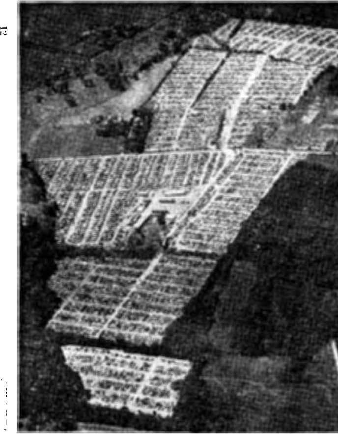
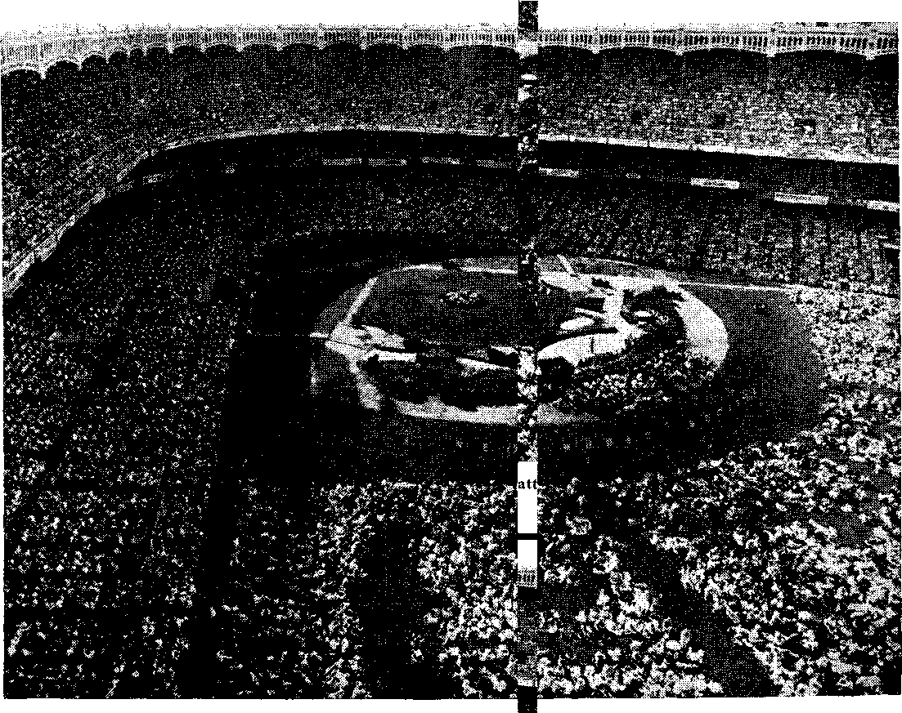

aionar.es (or each day were in keeping with its name. Well over 18,000 wit

Amazing attendance of 165,829 from 96 lands!
Kidnaping of Jewish orphans shocks France ----—
How modern machines give the doctor a hand
A dangerous waste of money and health
SEPTEMBER 22 1953 SEMIMONTHLY
THE MISSION OF THIS JOURNAL
News sources that are able to keep you awake to the vital issues of our times must be unfettered by censorship and selfish interests, “Awake i” has no fitters, ft recognizes facts, faces facts, Is free to publish facts- It is not bound by political ambitions or obligations; it is unhampered by advertisers whose toes must not be trodden on; it is unprejudiced by traditional creeds. This journal keeps itself free that it may speak freely to you. But it does not abuse its freedom. It maintains integrity to truth.
“Awake!” uses the regular news channels, but is not dependent on them. Its own correspondents are on all continents, in scores of nations. From the four corners of the earth their uncensored, on*the-scenes reports come to you through these columns. This journal 5 viewpoint is not narrow, but is international. It is read in many nations, in many languages, by persons of all ages. Through its pages many fields of knowledge pass in review—government, commerce, religion, history, geography, science, social conditions, natural wonders—why, its cover’ age is as broad as the earth and as high as the heavens,
“Awake!” pledges itself to righteous principles, to exposing hidden foes and subtle dangers, to championing freedom for all, to comforting mourners and strengthening those disheartened by the failures of a delinquent world, reflecting sure hope for the establishment of a right' cous New World.
Get acquainted with “Awake!” Keep awake by reading “Awake 1”
a i^*“**jr
PCULISIlHl) S KMT MONTHLY By watchtower bible and tract society. INC.
117 Adam* street Brooklyn 1, N. Y., IL S. A.
N. H, Knohu, President Grant Suiter, Secretwy
Printing this issue: 1,150,000
Fi^e cents a copy
LtUlpuMs I" Wfcleti this magazine If published: semi mon th ly—Afrikaans, EtibLUIi, Finnish, French, i^nnrrn. Hnllan4Uhr Norwegian, spaniel, Swedish, Mmhly—Danish, Greek. J'iirtuEiM^nr Ukrainian.
Offing Yearly siibjicri|jtlfin Rjite
Amirina, IL6-, 117 Adams St-. Brooklyn 1. N.Y'- Si Australia, 11 Beresford Kt. MralhfltjliI, N.S.W.
CiKtda1 40 Irwin Ave., Torentn fi, ihiuirln JI England, 34 Craveu Terrace. Lutnltm. W, 2 7ti Snth Africa, Private Bag, !’.<». Elandsfiintfin.
Transvaal 7h
Remittances si mu Id be sent to office In yew cwn-I ry jri Him plidj।nt witli regulsuions to guarani ch' Mate delivery of muuey. Remii tai iris are am'pteii n: Hmoklyn from cuimtrirs whf.e nu office is lormled. by iTitprriHihnial money onler only, fluhsr'itibiinii rateH In difftrynt twiltics iru here stated in local einrency. Notice d expiration (with renewal blink I h Kent at lem two issues before ftnbsictlplirHi expires. Cha use «t when seat to our nffl.ee
may he expeded effectire within one month. Sstifi yjjtir »ld ai well ik neu addms.
Knlerwf as. securnf-riasji mgr ter st RruffMyitr. X. 1' ot Marrfi 3, Wnteri Jn (A fif. A
CONTENTS
Vatican Mission Still a Mystery
New World Society Assembly .
The Colorful Indians of Ecuador
Electronics Tells What Ails You
“Your Word Is Truth”
Timing Christ’s Return
Jehovah's Witnesses Preaeh
Volume XXX tV -
ft rOakijr<1, N. V-» flBptemhar 55^ 1M3
Number 1B
THERE was a time when a drugstore sold drugs, a five-and-ten-cent store confined itself to low-priced merchandise, and in the country church one heard preached the "old-fashioned religion,” Now times arc changed! All three of these "businesses" stock many more articles. One ran purchase Ribles and Rih)e literature in the drugstore or the flve-and-ten, and he can even go to church and eat a* meal!
If you enjoy syrupy hutcakes and coffee on Sunday mornings, but you would rather not get up and prepare them, then hear the ‘‘call" of this Chicago church, as reported in the Philadelphia Enquirer of March 9, 1953, under the heading, “Oddities in News”:
"The Midwest Bible Church started a campaign to Increase attendance today by serving free pancakes and coffee to 600 breakfast guests. The guests attended after they had eaten their fill. As part of a Midwestern Lenten drive to increase Sunday School attendance, the church plans to feature different attractions each week until Easter. Next Sunday, 2,000 helium-fillcd balloons will be released from a parking lot next to the church. On March 21 and 22, a blimp will hover 200 feet above the church with streamer promotions.”
Is there Scriptural support for these Sunday morning repasts? There come to mind the two essential free meals that Christ
Jesus served to the 5,000 and 4,000 weary travelers. But where is there any similar: ity in this Chicago church affair? Christ fed those who had followed him on foot and had listened until a late hour. The
spiritual f'
came first, then the material.
Also Jesus perceived the real motive of
material-food seekers: "Most truly I say to you, You are looking for me, not be-' cause you saw signs, but because you ate from the loaves and were satisfied. Work, nut for the food that perishes, but for the food that remains for life everlasting.” —Matthew 14:13-15; John 6:26,27, New WorM Trans. '
The miracles that the Master performed were for the purpose of glorifying bis heavenly Fattier, for identifying who the Son of God was, and in fulfillment of Bible prophecies. He did not stoop to offer drawing cards for Increased membership by planning different “attractions" weekly, but he concentrated on one dear message, the kingdom of God. “The Law and the Prophets were until John. From then on the kingdom of God is being declared as good news, and every kind of person is pressing forward toward It."—Luke 16:16, New World Trans.
How foreign to the Scriptures and to real Christianity are the varied theatrical presentations and entertainment programs of modem religious organizations! In their misguided quest for mure followers the tentacles of organized religion reach out into the political field, commerce, sports, the theater, and even into the restaurant business! Just to keep their customers satisfied, for without such efforts they might not keep their customers. There are proper places to discuss politics and receive advice on voting, but the church is not one of them. “My kingdom is no part of this .world/’ said Jesus* Commerce is not to be carried on in buildings dedicated to God, for Jesus said further: “ ‘My house will be called a house of prayer/ but you are making it a cave of robbers/’ Bingo parties, movies and athletic contests are certainly out of place in church. As for elaborate church suppers or “free pancakes,” the apostle Paul reminded: “Certainly you do have houses for eating and drinking/* -^Tohn 18:36; Matthew 21:13; 1 Corinthians 11:22, New World Trans.
“Jack of all trades, master of none” is a popular axiom that appears to aptly fit Christendom’s conglomeration of religions. The one work that Christendom is obligated to do—by her name and by her possession of God’s Word—is sadly overlooked, and left to a small minority to carry out: “And this good news of the kingdom will be preached in all the inhabited earth for the purpose of a witness to all the nations, and then the accomplished end will come.” (Matthew 24:14,
New World Trans.) In the midst oFfamine-ridden Christendom during the past seven decades there has arisen a rapidly growing group of gospel-preachers to fulfill this divine prophecy and command.f
Jehovah’s witnesses, called by some “the world’s fastest growing religion,” need no revivals to increase attendance at their meetings or assemblies* From some hundreds at the turn of the century they now number over 510,000 active ministers in 143 lands, and each week they hold Bible studies with at least a half-million others* They rise early on Sunday mornings and devote several hours in distributing spiritual food to truth-hungry people at their homes. They appear regularly on* the streets following the example of Jesus and Paul, “keeping a tight grip on the word of life/* using every possible avenue to provide the public with "the food that remains for life everlasting.” (Philippians 2:16, New World Trans.) With true worship as their only drawing card, their ranks continue to swell, both in their individual Kingdom Hails and at great national and international assemblies. The increasing numbers come because they know they will benefit from the real spiritual food that is offered freely* Jehovah’s witnesses are living proof of the fact that when such is offered, inducements like coffee and hot-cakes and balloons for the kiddies are not needed*—Contributed,
REGARDING COMMERCIALS
When advertising executives recently met in Los Angeles a district represent-atfve ot General Electric said; "Television commercials have almost reached the
point where I don’t believe a doggone thing I hear on the air* For instance, we have not manufactured a certain vacuum cleaner for twelve years. Yet it is being
boosted on TV as the latest thing*” A swelling volume of dissatisfaction is heard from viewers and commentators. Among them is Advertising Age> which said TV
is mortgaging '"its wonderful prospects” “by the acceptance of high-pressure scarcely credible, and scarcely honest advertising that observes the rules of the
1870 pitchman [a public novelty venderL and practically nothing else.”
proud when
time when a man had just reason someone referred to
to be him as a bigot. As first used, some eight centuries ago, the twin was applied to "men who were staunch lovers of freedom. Concerning these we read In What Price Tolerance? (Paul M. Winter), on page 340:
"Rollo, the first Duke of Normandy, when commanded tn kiss the foot of Charles ITT, the Simple, King of the West Franks, in return fbr the province of Neustria, declared, ‘Ne se, bi gott’—(Not so, by God!) This oath by Rollo earned for the Normans the title Bigotti, and later changed to Bigots. According to the twelfth century chronicle the Normans remained steadfast in their fidelity to each other, much to the dismay of King Charles.” Yes, as used then, those freedom-loving Normans had just cause fur pride in their title "Bigots" even though not intended as such.
Today, however, the term is one of shame, for instead of referring to one who insists on his rights of conscience, it refers to one who would refuse to grant others those rights, to one who would practice injustice and intolerance because of his religious beliefs. Thus Webster defines bigotry as “obstinate and unreasoning attachment to one's beliefs, with intolerance of beliefs opposed to them.”
A striking case of bigotry in modern times has been featured in the French press, particularly since March, 1953. It ■
obs Dead Parents
concerns itself with two Jewish orphans, Robert and Gerald Finaly, who were but three and two years of age when their parents were apprehended by the Gestapo agents of Hitler on February 14, 1944, never to be heard from again. It seems that the father turned his children over to a Catholic foundling home run by a Mile, Antoinette Brun. An aunt nf the boys located them in 1945, a year later, just after the war was over, and asked for their return, but Mile. Brun, having determined to make Roman Catholics out of these Jewish boys, refused to turn them over to their closest living blood relations. Three years later, when the hoys were seven EUld six years old, Miss Brun had them baptized into the Catholic Church. In 1949 the relatives of the Finaly boys presented a mandate in the French court asking for the .boys. After almost four years of legal battling, the French court ruled in favor of the Jewish relations and against Catho-
lie Miss Brun.
But did Miss order and turn uncle and aunt? them up and so
Brun obey the court’s the boys over to their No, she refused to give was arrested. When the
pulice came for the boys, they were nowhere to be found, fur she had arranged with Catholic priests to smuggle the boys from one Catholic school to another until finally they got across the French border into Spain, where Miss Brun and her coconspirators felt the boys would be safe from the French police. Within a month seventeen Frenchmen, including six Roman Catholic priests and two nuns, were
either in jail or out on bond because of being involved in the disappearance of the two boys.
A Catholic priest, who had been arrested for his part in smuggling the boys across the French border and into Spain, claimed that his action of running off with these boys could, not be termed kidnaping because the boys themselves were in sympathy with his actions and did not want to be turned over to their Jewish relatives; also that “their only regret was not to be able to write their mother,” Miss Brun. But Miss Brun is not the mother of the boys, and had she not kept them since 1945 in spite of the objections of their Jewish relatives, those boys would not have felt the way they did about wanting to remain with their Catholic guardians.
Time magazine, March 16, 1953, which reported on this matter, did its best to minimize the gravity of the action and its blameworthiness by implying that there was doubt as to the wishes of the parents in the matter of the religion of their offspring. True, the boys had been circumcised, but Time questions whether it was done for health or religious reasons, and says that the father had not specifically stated whether he wanted his children brought Up as Jews or as Catholics. But let Time ask Catholic parents how many of them would want to have their boys raised as Jews and it would know, since it seems not to know at present just how Jewish parents would feel about having their boys raised as Catholics. To advance such arguments merely reveals how weak the case is for Roman Catholic Miss Brun.
Miss Dorothy Thompson, American columnist, regrets the issue that has been raised, dwells at length on the hospitality of those taking in Jewish orphans and describes the incident as that of a French court asking that Jewish boys, who had become Catholics, be returned to Jewish relatives, But how had these become Catholics? After having these boys just one year, the relatives requested their return. By what right did Miss Brun refuse to give them up? Is that what their parents would have wanted? By this action was she not in effect robbing the dead parents of their children?
Miss Thompson speaks of the love that Miss Brun-had for these boys, but does lows for orphans manifest itself by changing their religions as radically as from Jewish to Roman Catholic, when they are too young to know what religion is all about; and especially to do so in the face of bitter opposition from the orphans’ closest relatives? Miss Thompson speaks of the boys’ disappearing in spite of the efforts of Catholic authorities to recover them. Despite French efforts to recover them, yes; but despite Catholic efforts? Would six priests and two nuns have gone against the orders of their superiors in such a matter had their superiors really wanted the boys returned to their Jewish relatives?
Did not the aunt ask for the custodyjaf the boys when they were but four and three years old, only a year after Miss Brun had taken them in, and in spite of which she persisted in catechizing them, making Catholics out of Jewish boys and then having them baptized three years later? Miss Brun may talk much about the fove she had for these two Jewish orphans, the “most abandoned” of her charges, but it is apparent that religious bigotry, a desire to gain converts for her church, and not love for the children, their rights and the rights of their relatives, was the motive prompting her.
Baron Guy de Rothschild, head of the international banking house and lay leader or French Jewry, expressed the way the Jews, particularly those in France, felt about this Finaly affair. He pointed out that the Jewish community would never accept the forced conversion of the Jewish boys and that whereas for years this matter had been a private legal battle between the relatives of the boys and the Roman Catholic social worker who had become their legal protector, “Now, within a few weeks, the private persons have passed into the background and one finds engaged in this affair the French Government, the Catholic Church and all of Judaism. Simultaneously the case has jumped into the forefront of the news and has provoked so much violent feeling and so much passionate debate in public and private meetings and in all circles that one is tempted to give it an importance analogous to the Dreyfus or Petain cases.’*
Baron de Rothschild continued*. “Nonrestitution of the Finaly children to their family and their conversion to Catholicism constituted one of the worst abuses of confidence vis-a-vis their unfortunate parents. . . . Too many priests have played an active role in the Finaly case for us to hesitate in incriminating the entire church, which is a highly organized and hierarchized body.” The New York Times, which carried the foregoing expressions of the Baron, concluded its report with the following significant observation of its own: “Several Roman Catholic officials and lay persons have criticized those who baptized the children for violating canon law, since it was done without parental authorization. There has been no direct criticism by a high church official of those who have hidden the children."
True, the archbishop of Paris, Cardinal Felton, asked for the return of the children, but why? Because what had been done was in violation of the principles of Christianity and justice, not to say anything of its being in violation of canon law? Not at all, but merely because the law should be obeyed. He, however, prefaced the remark with a request for clemency for those involved in this kidnaping and forced conversion.
The Finaly affair was taken seriously not only by the Jews and Catholics of France, but also by French liberals. Said the New York Times; April 15,1953, on this aspect:
“Paris Group Warns Church on Powers. Sees Case of Jewish Orphans as an Attempt to Assume a Temporal Role.” Referring to numerous Catholic statements, none of which, however, emanated from high officials, to the effect that the church had a right “to assume physical control over baptized children, the manifesto issued by about thirty educators and writers declared that it represented 'an offensive to restore a doctrine that gives the church, in addition to Its sovereignty over suuts, an ill-defined portion of secular government also.’ The manifesto said that in accordance with the French Constitution the church’s spiritual mission gave it no right to intervene in civil matters.”
The New York Times further observed that in the face of growing protests against the way the Catholic Church has handled this whole affair, the Jesuit monthly, Etudes, manifested a much-remarked softening in attitude. In this publication a Catholic priest, Robert Rouquette, asked “whether it was in fact the duty of the modem church to take baptized children away from unbaptized parents or relations.”
What does this indicate? That only because of the pressure brought to bear by popular opinion aroused in righteous indignation at the Dark Ages policy pursued by the Catholic Church has there been a softening in her attitude. In other words, it is all right to steal Jewish infants from their dead parents by baptizing them as
Catholics before they are old enough to know what is involved, and in spite of the pleas of their relations for their return, until an outraged public has to be reckoned with—then be willing to question whether, after all, such things are right or not.
Christ Jesus commanded that we were to do to others all the things we wanted others to do to us. (Matthew 7:12) Would Catholics want their children taken over by Jews, raised as Jews? Christ Jesus also commanded not to prevent parents from bringing the little children to him, but do we ever read of his authorizing the forcing of children to be brought to him in spite of the objections of their parents or closest living relatives? (Mhrk 10:13, 14) If a church were following those principles of Christ, would it be necessary for her to be forced by an unbelieving world to do that which is right?
On April 16 the press reported that the French Ministry of Foreign Affairs had received a communication from Spain to the effect that it would return the children only if Miss Brun and the Jewish children had reached an agreement, which actually amounted to siding in with the kidnaper of the children, Miss Brun. Then France’s highest court upheld the decision that the orphans should be placed in the custody of their aunt in France. Forty-eight hours later (June 26) they were returned. Under an agreement between the cardinal primate and the grand rabbi the boys are to live with their aunt until they are 21, when they will make their own choice between Judaism and Catholicism. The robbing of dead parents was defeated.
VATICAN MISSION STILL A MYSTERY
When Myron C. Taylor was appointed the personal representative of President Roosevelt to the Vatican, it left the impression that there was a vital need for such a mission. In 1948 Mr. Taylor published the book Wartime Correspondence Between President Roosevett and Pape Pius XII in an attempt to prove the importance of the Vatican mission. Yet the contents of this book revealed no good reason for the existence of the mission; the lofty and pompous words of mutual esteem left one in a fog. What was the need for such a mission? The book offered no clue.
But the mystery only heightened when Mr. Taylor published a book on the correspondence he handled between President Truman and Pope Pius XII. Not long ago The Christian Century, May 13, 1953, tried to .find a clue that might justify the existence of a Vatican mission. The magazine commented on Taylor's recent book:
“If the summary of its contents published in the New York Times on April 27 is adequate (and the Times reporter evidently was trying to find something of interest to quote) the whole exchange consisted Qf more unexceptionable remarks on the importance of religious faith in the pursuit of peace. Writes Mr. Truman to the pope: 'We must employ every resource at our command to bring to this sadly troubled world an enduring peace, and no peaee can be permanent which is not based on Christian principles.’ The pope replies in kind. Mr. Truman replies in kind. The pope replies in kind. And so on to a final exchange of admirable Christmas good wishes. What reason was there here for the services of an ambassador? Or even of a 'personal representative’ whose office expenses ran to about $40,000 a year? After all, the overseas airmail service is the best postal service we have, and overseas airmail stamps cost only 15 cents.”
“ Jehovah’s Witnesses m
aionar.es (or each day were in keeping with its name. Well over 18,000 wit
iQM»T*fft Ort to BW
Public Lecture
The New $
World So
ciety Assembly of Jehovah’s Witnssn now Is history—and what history! For eight days an average of 130,000 Christian ministers from 96 different lands filled Yankee Stadium, occupied the overflow tents or assembled at (he assembly's Trailer City, near New Market, New Jersey, some 40 miles away.
The climax of the assembly was reached on July 26 when 165,829 assembled at four o’clock hi the afternoon to hear the public address of the president of the Society, N. H. Knorr, on the widely advertised subject, ’'After Armageddon —God's New World."
Sophisticated New York gaped in amazement that a Bible convention could attract such crowds and marveled at their orderliness. As one policeman expressed it: ‘'These people pravlicv what they preach!"
96 Land A fte present fid
Emphasizing the assembly’s world-wide scope were the names of each of the eight days: "Earth’s Four Quarters Day," “North America Day,1* "Islands of the Atlantic Day,” "South America Day,” “Asia Day," "Africa Day/’ "Europe Day/’ and "Islands of the Pacific Day.” Each day’s name was lettered on the grass in front of the speaker’s platform together with the number of lands and ministers in those lands in that part of the earth. The reports of branch servants and niis-nesses came from Canada, upward of 800 from England, 287 from Germany, etc., for a total of some 22,000 fiorn 95 different foreign lands.
During the assembly discourses were given in twenty languages besides English. Attendances al such meetings ran from 54 for the Albanian lo 4,075 for the Spanish public meeting hold on Sunday, July 26, 1 p.m.
Within the Stadium
The international aspect of the assembly was also emphasized by 90 signs fastened on the girders around the stadium, on which were greetings together with a suitable illustration for each land. Among these were: Harvest in Philippines Great! South Africans Present Leap for Joy! Japan Blossoms in Holy Array; Though Divided—Still United, Germany; Our Love Penetrates Iron Curtain. Behind the bleacher section was a beautiful sign, 70 by 12 feet, that carried the welcome by the United States* witnesses.
Concerning the platform setting the New York Times, July 20, 1953, said: "The transformation of the Yankee field was wholly remarkable. Home plate was covered by a cluster uf sixteen amplifiers, hanked with potted plants. The pitcher’s box became a circle of red, white and yellow blotssoms. The orchestra was seated behind second base with an upright golden harp where the hag would be. Spreading
around from first base to third was a mAss array of ager&tum, marigold, geranium, lily, petdnla, hydrangia, dahlia and scarlet sage. A clear fountain played all day near the spot identified with second basemen. . . . Most impressive, separating infield from outfield, was a green barrier of balsam fir, espaliered in the form of a castle’s parapet, with jutting watchtower.”
The New World Society Assembly certainly provided a rich spiritual feast for Jehovah’s witnesses. Its theme was struck b$r its president, N. H. Knorr, in his Monday afternoon speech, “Living Now as a New World Society,” in which he forcefully outlined the history, purpose and progress of this society.
Throughout the assembly the discourses stressed the various aspects of living now as a New World society. It means engaging in a pastoral work of feeding Christ’s “other sheep"; it means walking in the name of Jehovah our God, putting that name ever to the fore; it also means fleeing now before Armageddon makes it too late to flee.
Repeatedly the ministers were reminded of their teaching commission and particularly the requirement to teach from house to house. The purposes to be served by this ministry were noted. New World society training of children, the manners of its ministers and woman’s proper position were discussed. The need of having an unselfish motive and having one’s acts directed by the living Word of God was also brought home to the assembled ministers, Stressed also were the privileges of full-time activity and especially that of the missionary; and special and pointed instructions were given to the various groups of full-time ministers.
Increased light was shed on Gog, he being Satan the t)evll himself; “the desire of all nations” of Haggai 2:7 was identified as the men of good will now taking their stand; the founding of the new earth dates from 1919 when spiritual Israel was freed from modem Babylon.
New publications of the Watch Tower Society are often released at an international assembly of Jehovah’s witnesses, and this assembly was the best yet, 75 publications having been brought forth in many different languages. The three major English releases were: “iKafce Sure of All Things?’, a 416-page pocket-sized Bible handbook containing more than 4,000 quotations of Bible texts under 70 main themes; the New World Translation of the Hebrew Scriptures, Volume I, consisting of the first eight books of the Hebrew Scriptures known as the Octa-teuch; and the 384-page Bible study aid, “New Heavens and a New Earth33,
Three English booklets were also released: “Preach the Word33, which gives a Kingdom witness in 30 languages; Basis for Belief in a New World, prepared especially for missionaries in Oriental lands, yet valuable for all encounters with Bible doubters; and the booklet containing the public lecture, After Armageddon—God’s New World. Four new timely tracts were also released and also four issues of the assembly’s 16-page newspaper, Convention Report of Jehovah’s Witnesses.
The New World Society Assembly was well organized. Several months before it began, the work of obtaining rooms was brought under way. Close to 50,000 rooming accommodations in private homes were obtained; some 35,000 witnesses stayed at hotels, one hotel alone accom-
modating 1,900; and upward of 45,000 stayed In tents and trailers at Trailer City. About 5,500 took port In looking for rooms.
In the Trucking department 60 tracks, ranging from half-ton to double trailers, were volunteered and operated by 289 workers. Forty expert technicians took care of the sound department and publicaddress system, which utilized 250 loud-s peaks lb and three miles of wire, and with the help df the telephone company tied In both Trailer City and WBBR to the assembly's programs. The music was furnished by an orchestra of 77 skilled musicians under the able direction of V, R. Duncombe, who also led the singing.
The cafeteria, operated by 4,500 willing workers, was a model of efficiency that amazed outsiders with its capacity of 30,000 mealfl per hour. A lieutenant from a nearby naval base came to see how it was done, with n. view of using such n system “in case of bombings or other disasters." Ln the refreshment stands, 5,500 volunteers supplied conventioners with sandwiches, milk, soda water, ice cream, co flee, “hot dogs,” etc. -
The First Aid department, consisting of 20 doctors and a staff of nurses, took care of the emergencies and minor mishaps, which were very few considering the size of the crowds, the weather and other circumstances. Among other departments were “Attendant” (Usher); Press and Public Relations; Cleaning; Convention Reporting; Engineering and Installation; Bookroom; to mention but a few.
Provision was made to translate the lectures into the sign language for the 60 deaf-mutes that attended, and also to put the lectures on tapes; some 11,000 tapes, each containing two hours of lectures, were ordered. Radio Station WBBR had a staff on hand to tie in the programs with its own whenever possible and to make recordings for broadeasting at such times as the assembly was not in session.
And all this work was done without a single cent in remuneration, all giving their skills and abilities because of their low for Jehovah and their neighbor.
Trailer Citg
A considerable segment of the New World Society Assembly found itself at Trailer City, where, on the last Sunday, 49,027 heard the public lecture. Situated 40 miles from Yankee Stadium, near New Market, New Jersey, it covered 200 acres, on which 1,500 trailers were parked and 6,000 tents were pitched. Laid out in streets and avenues, which bore Biblical and other names associated with Jehovah's witnesses, it bore a Now Worldsociety look. Registered as staying In Trailer City were 45,453.
For its various departments 78 buildings were erected, which, if placed end to end, would have stretched out a half mile. Eight miles of pipe were laid, and 23 miles of electric wires supplied light and power.
The New York Herald Tribune, July 21, 1953, in reporting on the assembly and Ilie Trailer City, under the heading “A City Is Burn,” had, among other things, the following to say: “In a close-mown 160-acre whcatficld at New Market, N.J., 30,900 Witnesses have settled down and created the nation’s politest, neatest and certainly newest municipality”
Other Conuvttiion High Light*
An outstanding feature of the assembly was the resolution offered at the conclusion of the president’s Monday afternoon speech, “Living Now as a New World Society,” in which resolution were highlighted: that Jehovah’s witnesses recognize that 1914 marks the date of the establishment of God's heavenly kingdom; that the New World society takes no part in
AWAKE!
Tro4*r Crfy
*'*•* RiHM <*« h- wal
«* inUM nn < । ■> ii in, iwhhm*. **M*«**^M ■ *!■■ 4*t I Ml «HHtt****J
■Ml 4riM*iU < *ww*w “* fc** 14
i«« mm m* 4 tfpflwMM ♦* •" *I**T »•■"** ■ *11 i■ >i'W MMM *N
■wn H <»«p m* *«it
* ' H ■ । . 1-1 ‘ ■ ■■!.. i >— . 4„.)
■W* W IWfc **• W»H(M **H « M* •xrt **wMm iniiiimi !■*■ ittoMu* **>■ <—i *>n4« MrtjJ l>i< Il m<t*» I|h41«i>4 >.< * !■ ><• ■• ++« »*"**(
|H|I*4* l> «4>I4* IH* nt; '1
*■*1 HM>- >'!|W>hM.>4 <1 . 1M 4mh4
*f tn*, i^nw-ia-* # «>* •** «* m<4 *4*k|
I fc*»w-lfc w|Mil*f lH
IN‘fc I Ml! - 4WB«MKW|| *«• ***• *.«•■»■■* >4i4
|^ M- ■’ B» # •«■■ & ■*-<!•! **HM '«l*H
» .Hip -i IHM tma *#*»»* *11-1- 4.rM*
'i* '«■> ta«* SUH- Kill > Im •• HJ*H*
*t(4i -ill p I Mi-MUt'-ii i liffa -*h4*i.
„H4* fin IUi.h-u* tv fiiHt 4fa«ril» «d
NW UIHl- i. * e-HiliH * -Mi^-fcta.^ -HMdlM :WhN <h*rfi llli hfcflB_____________________________________—________________________________________J
SEPTEMBER 22. 195',
Crowded stadium showing Sunday afternoonSbublic lecture attendance
any political activity, disavowing all subversive movements and the use of violence in the overthrow of governments; that it is united in one common bond despite differences of language, race and nationality; and that regardless of opposition it will continue to bear witness to Jehovah’s name, his supremacy and kingdom. The resolution was seconded by convention chairman Percy Chapman of Canada and adopted amidst thundering applause.
Another assembly high light was the immersion. On Wednesday after the discourse on baptism 4,640 persons of good will indicated that they had dedicated themselves to do Jehovah’s will, and these were baptized. Special buses took these candidates for immersion to the Riverside Cascade Pool, where two teams kept busy immersing for five hours.
The Watchtower Bible School of Gilead was made prominent in the assembly. Not only were its missionaries on the program every day, but the first day of the assembly was largely given over to them. In the afternoon 127 students from 28 different lands forming the 21st class were graduated and given missionary assignments in 44 different lands. (Picture of graduating class appears on page 15.) In the evening the graduates gave a two-hour demonstration of Gilead life, telling about their studies, classrooms, etc., as well as furnishing a very interesting musical program, consisting chiefly in folk songs of the various nations from which they came, by which they depicted how they relaxed while at school. A particularly effective feature was the impersonation by one at the women students of Mary Magdalene on. Jesus* resurrection day.
On Thursday afternoon missionaries from past, present and future classes combined to provide a very colorful pageant in native costume in which eight different very effective answers were given to the question: “How do you witness to Oriental people and cultivate interest in the Bible?” Included were branch servants’ reports from Burma, India, Japan, Hong Kong, Korea, Pakistan, Singapore and Thailand.
And still another striking feature of the assembly was the streamlining of the work carried on by the traveling representatives of the Watch Tower Society, known as circuit and district servants, and the emphasis that these are to place on the house-to-houSe preaching activity in the future.
Publicity
The publicity >that the public press gave Jehovah’s witnesses immediately before and during the assembly was by all odds the best that it had ever given. The reports were quite friendly and generous in space; by the morning of the last Sunday of the assembly 6,000 column inches on the convention had appeared in New York papers.
Weeks before the assembly began the Brooklyn Eagle gave a good news story telling of the quest for rooming accommodations made by Jehovah’s witnesses. And on the first day of the assembly/ in addition to news reports it featured more than a full-page story entitled “Jehovah’s Witnesses: From Brooklyn to Armagbd-don. Their Message Is Warning of Final Battle and Promise of ‘Wonderful New World to Come*.” By picture and word it told of the headquarters home, factory, radio station, and rather objectively discussed what the witnesses teach.
The Sentinelj a weekly published near Trailer City, gave pages of publicity to the assembly, particularly as represented at Trailer City.
For a more detailed coverage of the New World Society Assembly of Jehovah’s Witnesses we refer our readers to the 96-page Convention Report for 1953.
SEPTEMBER 2:>. 7-95-?
Twenty-first Graduating Class of the Watchtower Bible School of Gilead
Deft to right: Front row: Bonno, E., Berecodiea, M., Cantwell, D., Nako, A., Martin. V., Percival, K., Dittau, A., Read, D., Swanepoel, A. Second row: Bradley, C., Park, E., Mull, H., Thom, K, Hallquist, E., MacDonald, J., Smith, J., Matthews, G., Samson, D.. Heywood, B., Monterroso, M. Third row: Boorman, C., Fischer. S., Tan, H., Kamp, M., Marshall, J., Doreilhe, L., Morris, V., Wallwork. 1., Baptiste, C., Luetchford, S., Martin, 1).. Dollin, R. Fourth row: Ferguson, E., Styra, G., Prudehl, E., Aulich, I., Clayton. F., Swaby, L., Candusso, I., Harris, M., Smith, S., Clark, H., Hinkson, B. Fifth row: Reast, S., AVood-ward, E., Roy. B., Antao, S., Bradley, L., Schiffleger, C., Skipworth, B.. Hosie, G., Goff, J., Kershaw, J., SchifHeger, J., De Young, M. Sixth row: Batson, B., Danner, R., Mills, J., Clayton, B., Brown, AW, Stegenga, M., Hinkson, E., Del Rio, J., Roach, J., van Seiji, G., Wilson, J., Steynberg, M., Smith, F. Seventh row: Espley, J., Smith, S., Hibshman, D., LeClair, C., Holt, I., Cantwell, J., Mudge, R., Read, AV., Berecoehea, A., Crich, A., Mallen. C., Ahuama, F., Giannone, S., Dunkenheimer, O. Eighth row: De Young, R., Fletcher, T., Barlow, D., Sallis, AV., Kowalewicz, F., Percival, M., Nicholls, P., Hosie, D., Kershaw, W„ Nonkes, G., Blaschek, E., Bartonek, E., Herink, S., Mull, D., Matthews, E. Ninth row: Hibshman, P., Sedgwick, P., Wallwork, R., Wiegersma, A., Fischer, W., Biehn, J., Clark, P., Dell’Elice, R., Batson, O., Stierling, J., Jones, A., Bonno, A., de Kruijff, A., Gillan, F., Somers, E. Tenth row: Stegenga, D., Gibhons, J., Kamp, D., Matthews, D., Hardy, W., van Seiji, W., Steynberg, W., Smant, J.. Martin, V., Riecken, G., Prince, W., Wynder, J., Uttau, H., van A’uure, H., Goff, C.
The Colorful Indians of Ecuador
By “Awake!” correspondent in Ecuador
IN THIS little South American country of Ecuador, in the jungle west of Quito, between the Andes Mountains and the Pacific Ocean, is a spot that the Colorado Indians, some of earth’s most colorful people, call home. Once numerous, it is estimated that now only about three hundred are left.
Tliree of us in company with two American naturalists went to see them. The trip itself was as absorbing as the Colorados. We went up and out of Quito’s valley until the magnificent and brilliantly green mountains surrounded us. They were cultivated to the very tops in neat, measured squares. Oxen strained powerful muscles pulling plows on their steep sides. A llama was silhouetted on a mountain. Then clouds began drifting in white mists between the mountains and filling in the. valleys below. At times we could see only the road ahead of us. The grandeur of the mountains was hidden and the white cloud-mist turned the visible world into a fairyland. Gigantic trees were weirdly shaped by hanging moss and vines. We stopped for lunch and stretched our legs.
Baek in the bus we raced down narrow mountain roads, and that night reached tiny Santo Domingo. The next morning we struck □ut for the jungle to get an intimate view of the country of the red people we were to visit. The path zigzagged down a steep hill to a roek creek of clear, fast-moving water. The mammoth trees overhead came together and shut out the sky like a great, green, leafy roof. Glorious birds waited in the branches above us. Blue and black butterflies eight or ten Inches across ignored us in their flights among the trees and vines. Insects sang and buzzed. Overgrown, painted beetles in green, blue and red crawled from under leaves and rocks. Scorpions hid under bushes and centipedes lay along leaves and branches. Monkeys chattered in the trees well out of reach; animals hid. The gleaming colors of tropical flowers made a dream of the underbrush. *1? Painted Colorados make an unforgettable splash of color in the dark green of the jungle. Their bodies are completely covered with a red so bright that it startles the eye. The hair, too, is scarlet. It is rubbed full of what at first appears to be red clay, but turns out to be achiote, a small red seed that readily gives up its color just by touching it with the hand or mixing it with water. The Colorado smears his body and hair with this dye. He molds it into his hair so well that it looks like a bright plastic cap that comes down almost over his eyes. It is cut straight around, even with the eyes, and the back is shaved up to that line. The Colorado’s face is striped horizontally with black stain. Chest, arms, legs, even feet and hands are decorated with black and blue stripes and dots over the red. With a sharp yellow shawl over his shoulder and a scarlet red sash holding up a black-and-white-striped sarong, his dress is complete. Some Colorados. however, add wide gold bracelets, and top their red hair with a straw ring like a twisted doughnut dyed in bright colors. The women decorate their bodies, too, but leave their hair black and long. They wear only a striped cotton skirt with dozens of strings of brass and colored beads,
*8? They are a happy people, honest and respectful. A traveler told of spending the night in a Colorado hut. His horse was fed, watered and tethered, and he was invited to slfcep in the Indian’s bedroll. He awoke with a start. The hut was empty. He dashed outside, confident he had been robbed of everything, including his horse. But there he saw ^Jus horse, tethered under the hut, and the Colorado family was asleep in a lean-to they had thrown up so the stranger could be comfortable in their hut by himself. Their little huts generally house families of five or six. But if one member dies, the hut and all possessions of the dead one are burned. The family moves to another spot and builds another hut. The Colorados have no books to disclose their history. Their legends are told in their own peculiar tongue and seem to reveal an ancient connection with the tribes of the sierra.
*8? In this green jungle with strange animals and brilliant birds these painted Indians are fast disappearing. They live not only at an end, however, but at a beginning, for the Almighty who made possible such an interesting variety in man, animals and all nature has promised that under His kingdom the beauty of the earth will be focal].
THE "old fashioned” pre-elect ronic doctor was often a man of integrity who used souxid judgment to give sound advice. His equipment was perhaps crude, but it was used with groat skill acquired by diligent work in college and as an intern. Today’s doctor is not limited by etude equipment. 1 Ie can use electronic equipment tn diagnose and even to treat his patient’s ailments. This equipment is no substitute for skill and sound judgment, but il can be of great benefit.
Each day seems to bring forth more of this equipment. Many of these diagnostic machines write down in a chart form the information they ftynish. The names nf these machines usually end with "graph/' meaning that they draw or write. Thus they tell the skilled physician what aiis you.
Suppose a doctor believes a pattent has heart trouble. To verify this he may use a device that records the action currents produced by the patient Is heart as it pumps the blood. This is possible because the muscles of the heart expand and contract, setting up action currents. A highly trained expert, then analyzes and decodes the information that the machine has supplied. Many heart ailments can be accurately diagnosed by this process, and it is widely used today.
Heart ailments are also detected by the use of sound amplification. This method tells the condition of the heart valves by the sound they make. The sound is used to produce a graph that shows, for example, which valves arc more or less leakv. With T"
this device not only heart sounds can be
SEPTEMBER 195^
. detected* and recorded
► but also those of the
\ lungs and stomach.
Another device used in YOU obtaining information
about the heart records ....... the state uf fullness of the blood vessels, and, thereby, the heartbeats. Also, a record can be made of blood pressure, which may give more Information about the heart.
When the heart pumps it produces considerable mechanical force. If the patient lies on his hack, there is enough force developed to move the whole body. This movement can be detected and recorded by means uf a pickup device laid over the shins 'and fastened in place. Thus from these various ways of checking the action of the heart the doctor can obtain invaluable information about cardiac conditions.
The liftiin
Electronic devices ar? used to record the electrical activity of the brain. These devices are comparatively new, and the various electrical waves sent out are not understood completely. However, the knowledge based on experience and experiment is growing, and this has become an important tool in diagnosis of many conditions that would otherwise be difficult or impossible to diagnose.
Brain wave signals have been compared with frequency-modulated (F.M.) radio signals, ft is thought that this prevents other electrical discharges from interfering with them. Small metal electrodes are held to the scalp by a drop of collodion. A small shielded w’ire from this connects to the input of a sensitive amplifier. The signal is amplified enough to operate a recording pen or stylus. These devices have been able to locate brain tumors and to diagnose various forms of epilepsy.
An interesting diagnostic method is the
17
recording of electrical potentials produced when muscles are active, a smaN needle with an insulated shaft and bare tip is thrust into the muscle. The small exposed area at the tip permits contact to be made to an individual muscle fiber or a group. By means of an amplifier the potentials are displayed on the screen of an oscilloscope to be seen and photographed and also converted to sound by a loud-speaker. Most of the signals are produced in the muscle when contracting; the sound heard in the loud-speaker sounds like machine-gun fire.
Then there are machines called stimulators that produce electrical signals that are used to test nerves and muscles to find out if they are intact or have been damaged. In other fields of electronics this would be called signal tracing. Normal test signals have been established for all the major muscles and nerves so that they can be used for comparison in future tests.
It is possible to test liquids by means of a photoelectric meter, which measures the amount of light passing through the solution. For instance, samples of blood or urine are treated chemically to produce a solution in which the depth of color is used to indicate the presence or absence of various substances. The meter then indicates the depth of color. This technique is highly accurate and is accomplished rapidly.
X rays are used to penetrate what we think of as solids. Simple X-ray equipment is composed of a high-voltage transformer and a vacuum tube that contains a cathode producing electrons and a tungsten target. When the electrons strike the target, the X rays are produced. Various types are built to produce X rays that will do the particular work required with the least expense. Skilled doctors know how to use them with perfect safety to the patient and to themselves. Their major use in diagnosis has been to take pictures of broken bones and abnormalities of internal organs.
The fluoroscope is another use for X rays by addition of a fluorescent screen to view the bones or organs immediately and directly without photography. The patient is placed between the X-ray tube and the fluorescent screen. This diagnostic method has been limited by poor visibility and lack of definition. But now by adding the modern science of television the former limitations have been overcome and this tool will be more valuable.
Electronic devices not only tell what is wrong, but are also used in the treatment of various ailments. Electrotherapy is the use of direct current and low frequencies of pulsating direct and alternating current. The therapy is not really new. The electric eel and the torpedo were known in the Nile and Mediterranean long ago. But very little was known about electricity and just what these fishes produced. However, many ancient physicians prescribed shocks from one or another of these fishes for various illnesses, so that electrotherapy is really very old indeed.
There are several common types of ^lec-trotherapeutic waves, such as galvanic current, pulsating galvanic, surging galvanic, slow sinusoidal, etc. Results from these various currents may be increased circulation, destruction of tissues (bloodless surgery), infusion of drugs into the tissues, and stimulation of muscles and nerves.
Electric shock therapy consists of applying current to the brain for very brief periods of about two tenths of a second. In certain types of mental disorders, strong medicines were used to provide a great crisis to jar the nervous system and brain, thus bringing relief. Now this is being tried by electrical means.
It has been found that a malignancy like cancer can be destroyed by X rays. Many
ways barebem devrod to apply the X rays where they are wanted witbout burning adjacent tissues. Since the hums can be disastrous, skill is required in the applies’ tian of X rays for beneficial results. This is done by timing, shielding and directing the output of the X-ray tube. A normal tissue Is always rebuilding worn-out cells and repairs any minor bums due to this or any other cause.
Short-wave diathermy is the use of radio waves to produce heat or an artificial fever deep within the tissues. Heht has been recognized and used for centuries to aid the curative powers built into the human or* gun Ism. It Is now known that heat, light and radio are all similar electromagnetic waves. Heat can be used as an aid to recovery when produced by heat lamps, electric heating pads, radiant electric heaters, steam baths, exercise, massage or even a red-hot stove or open fire. The type of malady and condition of the patient would determine which application would be best.
Langer radio waves were formerly used in diathermy, but today the short waves are in favor. In this therapy, production of heat Is felt by the patient and the benefits derived can be ascribed to this heat and the increased How of blood that it causes. This blood brings more leucocytes and antibodies to fight off infections at a particular place.
Ultrasonic Wave*
Ultrasonic waves ore sound wu^es >.kjsc vibrations are so rapid that our ears cannot respond to them. These.and other sound waves can travel in air or liquid and most solids. Therein they will be absorbed and reflected. Some work has been done on using ultrasonic waves in cases of neuralgia. arthritis, infections, malignant tumor^ ulcers, prostate trouble and asthma. The results are encouraging and more re* search is looked for. The action is much like a deep vigorous massage that generates heat in the tissues and so is also called diathermy.
In diagnosis, ultrasonic waves can also he used tn easily detect when the stomach, bladder and kidneys nre full or empty. By a technique similar to radar, gallstones, kidney and bladder stones can be detected with ultrasonic waves. This method will surely have a part in a future system of competent and accurate electronic diagnosis of ailments.
Numerous other diagnostic instruments are available to the modern physician, such as those that detect alcohol in the breath, the blood flow in the stomach, and locate bullets or other objects imbedded in the body. But by a discusion of the moat important ones it is obvious that today’s physician is better qualified to answer his patient's question * “What ails me, Doctor?”
WHAT A LUMP OF “GLASS”!
Today’s largest cut diamond is the Great Stir of Africa, a flawless jewel weighing exactly 5163 carats/This enormous gem la cut from the mammoth Cullinan diamond. The fabulous Cullinan stone was discovered in South Africa In 1905 by a mine captain. It la said that he took Lite diamond to Ute mine's- president, Sir Thomas Cullinan, and was presented with a cheek for $10,000 posthaste!
But the mine had a problem. Who would buy such a monstrous diamond?
Their problem was solved when the government of the Transvaal bought it to present to Edward VII of England on his siity-sixth birthday. The selling price?
It is reported to have been SSDO.OOO! Of course King Edward wanted to see this gargantuan gem of 3,100 carats before it was cuL Upon handling it the king remarked: “This is a great curlaslry, but I should have kicked it aside as a lump of glass if I had seen it on the road!"
SEPTEMBER VU, 21K3
19
YRIADS of people swear by the ideas of quacks and money-grasping food promoters when it comes to health and healing. Fake healers inflate a good food or idea far beyond its actual value, wrap it up m extravagant advertising, and then sell it to the gullible public. Whenever a new scientific discovery appears, there is some inspired quack ready to capitalize on it. How can one detect these quacks? Why do people go to them? How do quacks get so many testimonials? And what is the value of the numerous “wonder foods” that so often become a fad?
Cure-alls, both mechanical and medicinal, are almost everywhere. Some manufacturers stay within the law by not misbranding the product, Others take a chance with advertising. As soon as the atomic age came bursting in, quacks began to capitalize on the widespread belief that atomic energy could work miracles in medicine. The charlatans borrowed some of the wonder words from the new vocabulary of nuclear fission and soon were high-salaried experts in the art of quack healing. With the weirdly named medicines and fantastic-looking gadgets, the quacks pulled the wool oyer the eyes of the health-seeking public and cold-bloodedly fleeced their “patients.”
Quack nostrum peddlers had reaped such a rich harvest that by 1949 the Food and Drug Administration announced that federal inspectors were being kept busy by a boom in “atomic remedies.” They seized such fake remedies as radioactive bath salts, an “atomic” shin-plaster, an “atomic” drinking water called U-235, and a device that sold briskly at $50 each4 on the claim that it emitted “Z-rays”^ that would lengthen life by “expanding the hydrogen atoms” of the body.
—New York Times of
August 22, 2949.
Radioactivity, wrongly used, is not a healer but a killer. So federal inspectors are genuinely relieved when they find that most quack “atomic cures” are merely worthless. It was advertised that one product known as “vrillium” emitted germkilling rays. It was made of small cylinders supposedly containing vrilfium. Prominent businessmen and politicians bought them, paying as much as $300 each. When federal agents seized this “germ-killer” they discovered that the cylinders actually contained a cheap rat poison. When Barnum said there was a sucker born every minute, he might have added that there was a quack born every hour to fleece them.
One “atomic” device called Atomotrone is said to sell for about $300. Actually it is a kitchen cabinet containing filters and sun lamps. Drinking water is placed in the cabinet and “irradiated” for twelve hours. According to testimonials one pint of this tvater has healed people of high blood pressure, and doses in various amounts have cured heart disease, ulcers, arthritis, diabetes, cancer and many other chronic diseases. Promoters of such “atomic” cure-all devices find fertile soil in the people who shy away from medicine and drugs. They also hit “pay dirt” when they sell them to people of a certain religion. Then to stimulate sales they can say to new prospects that many people of “your religion” have them. Just why a device has
to be an authentfecure-all because others of “yow relieion1’ have it is never explained/But it makes a good selling point
Those Formidable Machines!
Not ail quack devices profess something “atomic.” Some feature flashy appearances and corn plicated-loo king dials. Other quacks, knowing that there is a measure of successful and legitimate use of radio frequencies in treatment, induce the gullible to believe that an electronic machine has been invented to cure all the ailments that afflict mankind. Whenever a quack says the principle is radio waves, too often people, without investigating, immediately believe a device Is capable of extraordinary powers.
Radio engineers have made some enlightening statements regarding radiohealth “instruments/1 One said: “Many formidable machines without any scientific justification but apparently with much psychological and 'box-office' appeal, have been used for years by quacks and charlatans, the modern versions of the medieval mystics. One of these electrical gadgets supposedly was based on a theory that disease causes the body to radiate electrical energy at some specific frequency peculiar to that disease. The same machine diagnosed and likewise treated all diseases."
This machine, called Radloclast, was investigated by the Police Radio Bureau of a large City. And a reliable magazine (fiadio Craftj February 1944; now called Radio-Electronics) published the results of this investigation, including the circuit diagram and the rta^ons why the claims made for it could not he true. The machine sold for $1,000 and was supposed to detect, diagnose and cure everything from double vision to a bone in the coion. However, an analysis of the circuit diagram showed tha t the machine could not really function in that manner.
The patient holds an electrode in his hand, and the doctor, with one hand, rubs his fingers over a little glass plate and turns dials and knobs with the other. When the doctor “tunes in” to the disease, he is supposed to feel some resistance to this stroking; due to the effects of the “vibrations” on the glass plate. Then the doctor takes his readings, looks them up in a little black book and names the disease. It is noteworthy that this machine makes no graph or chart as do the reliable diagnostic machines mentioned in the preceding article. But the Radioelast, with its complicated-looking panel and classy appearance, sets at rest the doubts of even skeptical people.
One competent radio engineer of Indianapolis Police Radio Bureau who tested the Radiociast with the best instruments stated that he could not find "any kind of energy or vibration frequency on the detector plate." Professors of physics, radio men and others submitted to tests and found that they were diagnosed as having certain ailments. They also discovered that diagnosis went on uninterruptedly even when they secretly released the electrode supposed to conduct “vibrations1’ from Iheir bodies to the machine! However, on newer models a meter informs the operator when the patient releases the electrode.
The Rad ioel ost’s Instructions blandly stated that to give a general treatment all dials may be set at zero. “The thoughtful engineer would indeed be willing to admit that, for all the tuning the various sets of variable resistors might be capable of, it would certainly be just as well to leave them all nt zero!”—Radio Craft, February 1944,
Then there is the “Spectro-Chmme" machine. It sold fur S90 to $750. It was claimed that it would stimulate the pituitary gland, energize the liver, build hemoglobin and promote digestion, Lu say nothing of killing worms. United States mar-
RSPTEMBilH SHt
21
shals chopped some up. What did the “Spectro-Chrome” contain? Little more than electric light bulbs and colored glass! —The Milwaukee Journal, October 18, 1949.
How can quack devices be lawfully made and sold? The answer is simply this: Most manufacturers make no claim whatever for their machine. And there is no law against putting together some tubes, wires, resistors, colored lights and then selling the contraption. The law of averages, or better phrased, Barnum's law, makes the sale. Then the users of the machine, mostly doctors, make all kinds of incredible claims.
Cure-alls never do what they claim to do. If they did, fewer people would be dying of disease. In fact, it would seem that the people who are always buying cure-alls would soon start living forever without needing the benefits of God's kingdom. But they die like other men.
What is the grave danger in cure-alls? This: That people with serious diseases may fritter away valuable time hoping to find the quick cure. Instead they get the quack cure. Then if the disease is really organic, the quack remedies fail. Finally, in sheer desperation they run for competent medical aid. By then it may be too late; the disease, beyond cure.
To avert this disguised danger, fake remedies must be recognized. But how? If there is something inexplicably “mysterious” as to how the healing is accomplished, be on guard! When the advertising appears sensational, appeals more to the emotions, and overwhelms you with printed testimonials to the exclusion of sound principles, be careful! When one furthers the sale of a remedy on the basis that it is used by those of “your religion/’ beware! But the surest method of all is to note carefully the claims. If the Implication is there that something Is a cure-all, watch out! Competent doctors do not make extravagant claims. Quacks usually do.
How are they obtained? Many testimonials are bought outright. It is simply your signature for cash. Other testimonials are faked. But many are given in good faith. To understand why so many people freely give testimonials one must realize that there are many functional ills. These may be caused by fears, frustrated desires, anger, hatred and anxieties. On this point C. Raimer Smith's book, The Physician Examines The Bible, enlightens us:
“It has been estimated that about 50 per cent of the ills of the human race today are functional in nature; that is, there is no underlying pathologic change to account for them, but they arise from inner mental conflicts. . . . Pains of many kinds and in almost any part of the body—headache, backache, paralysis, blindness, indigestion, palpitation, convulsions and many other symptoms—may be functional with no organic defects present.”
But to the patient the symptoms are as real and disturbing as any symptoms of organic origin. So he visits one doctor after another, finally winding up in the clutches of some quack who is eager to “treat” him. “The quack caters to his subconscious emotional conflict and if the patient has faith in the procedures he will be 'cured’. Faith seems to be the key that will unlock the door of the subconsciqus and release any emotional complex stored there. So far as the patient knows, he is sick. He cannot distinguish between a functional symptom and one that is due to organic disease.”
Thus many who are “cured” of their functional disease eagerly offer testimonials. With testimonials and advertising the quack is in business. Because man’s
nstinctive desire for health and life is so rrepressive, it often propels him to grasp it any cure. Quack healers expkflt this in-itlnctive desire.
Secret formula medicines often tempt the gullible. List year the'Pure Food and Drug igents forced the maker of Old Chief medi line to stop claiming ft cured everything Tom nervoutmebB to fatness. Old Chief, by the way, is made out of skunk cabbage, cat-ilp, hops, com silk, mistletoe, hunjetail jrass and marshm allows.
Vhey Use Food like Medicine/
There are people who depend upon a food to cure serious diseases. They may be lopriving themselves of the opportunity Tor proper treatment. Hence, using food for medicine may be as dangerous as visiting quacks.
Food promoters grow rich because of the sensationalism of their advertising. A fad starts when a concern puts on an “efit more campaign?’ One year the public must Bat three cakes of yeast a day for pep, vim, vigor and vitality. Soon they are advised to switch to raisins to get their daily iron. Another “eat more campaign” says It must be yogurt or. spinach for the cure. Soon a new concoction must come to the fore to replace the product the people have sickened of. No wonder! People gulp down such mammoth doses, often to the neglect of vital foods, that they tire of the concoction. But the public continues to be deluged with screaming pronouncements about the health-giving qualities of this or that food.
What is wrong with the “health” foodf * Nothing. Some of them may be exceptionally nutritious. But often they just cannot live up to their claims. The unvarnished fact is this: “The beat medical opinion is that they [ the wonder foods] offer nothing one cannot obtain less expensively from ordinary foods?’—fn the Name of Science, by Martin Gardner.
When food becomes a medicine, eating becomes a chore; and that takes much of the zest from life. Also, those who overdo health consciousness arc usually not very pleasant people. So while some, because of iUnesis, may need a special diet, the key for the average person is moderation and variety. Variety in food Ie not only more pleasurable, but It brings a well-balanced diet.
Food faddists harp on “going back to God’s original way for healing?’ But did God bring in disease? Did Jesus heal with foods? No! Adam’s sin and resultant Imperfection made all human creation subject to disease. God’s original remedy is not food but the Ransomer and King, Christ Jesus, and the new world that he will usher in after Armageddon.
So the primary danger in overdoing health consciousness is that it can become a religion. It may take one’s mind oft the only cure-all, the only genuine remedy; Jehovah’s new world. Do not allow anything to sidetrack you from the narrow road that leads to life. For only God’s kingdom by Christ can fulfill this promise of perfect physical health.
Dirty Law
4,We learn there’s still a law on the books of Massachusetts forbidding people to take a bath between November and April. Perhaps dial accounts for the term “dirty Yankee.*' -From the Bouth-ol-lhe-Mason-Dixoti-Line Plano (Texas* Star Courier.
THE manta, largest of all the rays, is a Ilttle-known-about fish inhabiting the Florida reefs and other tropical waters. Poor Mr. Manta! He is often maligned. People call him by all manner of uncomplimentary names such as "devilfish," "sea bat" or "blanket fish." Sometimes he is even accused of forcing pearl divers down to the bottom of the sea with his giant batflke wings, whereupon he proceeds to iiine on succulent human flesh. Since Mr, Maijta has such a terrible reputation, would it not be interesting to take an unbiased look at this weird fish?
Mr. Manta is really a curious creature, but the first glimpse of him might be somewhat repulsive. But he is not truly hideous,, just odd. He is a broad, fiattened-out creature with eyes located on the upper, dark-colored surface of the body, and with mouth and gills located on the lower, light-colored surface. Actually, the manta resembles a fantastically huge bat; hence the name "sea bat.” The manta uses his big pectoral fins just as the bat uses its wings in flying and in a wavy, graceful manner propels himself smoothly beneath the water. How long are the "sea bat's” wings? They sometimes reach a width of twenty-two feet from the tip of one pectoral fin to the other! And the manta carries plenty of weight: he can exceed 3,000 pounds! \
Not only the wings give the manta a frightful appearance, but the tail region is also queer, it being reduced to a slender, whiplike organ that the manta uses as a rudder. (The sting-ray uses it as a special protective device.) But why is the manta maligned with the name "devilfish,” a term also given to the octopus? This is because the manta’s pectoral fins are different from other rays in that, instead of being attached to the aides of the head, they are free, projecting forward. When rolled up they look like a pair of curling horns. Thus Mr. Manta was dubbed "devilfish."
Now when the manta’s pectoral fins are not rolled up, they meet below the mouth to form a scoop—very handy at dinner time. Small fish approach near enough to the manta to be captured because he so closely approximates the color of his surroundings. But since the manta’s mouth is on the lower surface of the head, the prey cannot be directly seized by the jaws. So the giant fish darts over its victims so as to covfer and hold them down with its blanketlike body; then with its scoop the victims are rapidly swept into its hungry mouth. Mr. Manta prefers, however, a diet of animals that come in hard shells. This is because his mouth contains blunt teeth that seem to be specially adapted for crushing the shells of mollusks and crustaceans. Rays, being gregarious fishes, frequently swoop down in large numbers on oyster beds—to the dismay of the owners.
Is the manta really a vicious creature? Well, if harpooned it will make the “sport” a dangerous one, for with its great strength it can pull a light fishing boat through the, water and with its enormous wings deliver crushing blows. But if not attacked the manta is a docile creature. There seems to be no sound reason for labeling it a "man-eating killer of the sea.” Its batlike appearance has probably given rise to many superstitions. Some tropical pearl divers have a superstition about a blanketlike fish that attacks and devours men after enveloping them in its great pectoral fins. But the manta with its blunt teeth would hardly seem to be a man-eater. One staunch defender of the manta, who completely discounts its bad reputation, writes:
"As the manta approached our raft it seemed like a gigantic shadow which had the appearance of a huge bat or bird flapping its wings and swinging its long, thin tail as it ‘flew’ slowly along on top of the water. As the ray swam right into shore In shallow water, it caused panic among the bathers who fled out of the water. Sometimes manta 'rays would encircle horrified swimmers in shallow water. However, the docile but ferocious-looking creature harmed no one. and we could even swim with them side by side much to the amazement of some of the bystanders on shore. There have been some authentic cases of lads on fishing boats slipping a noose around a hooked manta ray in the water and mounting on the creature’s back going surf riding, keeping its head up with the reins!”—Contributed.
Timing Christ’s Return by Bible Chronology
OD had a set time for his Son Jesus to come to earth: “When the full limit of
the time arrived, God sent forth his Son/’ He also had a set time for his Son to give his life as a ransom for all: “Christ, while we were yet weak, died for ungodly men at the appointed time/’ (Galatians 4:4; Romans 5:6; 1 Timothy 2:6, New World Trans.} Christ Jesus himself recognized that God had set an “hour” for his death and so he avoided his enemies until that time.—Luke 4:29, 30; John 7:1, 30; 13:1.
We should therefore expect to find a definite time appointed by God for Christ to return. And not only that, but since God previously indicated the exact year that his Son was to appear as the Messiah and even the exact day he was to die, is it not reasonable to expect that he would also prophetically record the exact time of his Son’s second presence? Did Jehovah really give such details regarding Christ’s first presence? Yes, he did, by the prophecy found at Daniel 9:24-27, wherein seventy weeks of years are marked off for Daniel’s people, sixty-nine of which were to elapse from the commandment to rebuild the walls of Jerusalem to the coming of the Messiah, and which found their fulfillment in the 483 years from 455 B.C. to A.D. 29.
However, we are not to expect the exact date of Christ’s return to be stated in so many words, no more than the Scriptures mentioned the date A.D. 29 as the year of the Messiah’s coming. The prophecy that primarily indicates this date in cryptic phrase is in the form of a dream that God gave to Nebuchadnezzar, king of Babylon in the seventh and sixth centuries B.C., and which dream God caused Daniel to interpret.
In this dream the king saw a great tree that reached to heaven and could be seen over the entire earth, which furnished food for all mankind, in whose boughs the birds dwelt and under whose shadow all beasts took shelter. This tree ‘a holy one from heaven’ commanded to be cut down, but its stump was to be left in the ground. Seven times were to pass over this stump, during which it was to lose its human heart and be given that of a beast; the purpose of it all being that “the living may know that the most High ruleth in the kingdom of men,”—Daniel 4:10-17.
Daniel applied this dream to King Nebuchadnezzar and in him it had its first or miniature fulfillment. Twelve years after he had this dream, on a day when Nebuchadnezzar boasted about his achievements, he lost his reason, became like a beast, eating grass as an ox for seven years. Then his reason returned to him and he gave praise to the God of heaven. —Daniel 4:19-37.
Certainly this prophecy was not recorded merely to tell us of Nebuchadnezzar’s madness. Rather we must conclude that it is part of ‘all the things that were written aforetime for our instruction, that through endurance and comfort of the Scriptures we might have hope/ (Romans 15:4, New World Trans.) We know that at Isaiah 14 Satan the Devil is picbired as the king of Babylon. And since at Ezekiel 28:12^19 Satan the Devil is pictured as at one time being a covering cherub in the garden of Eden, it is reasonable to conclude that this tree pictured the governing capacity of this covering cherub over man and the lower animals.
When that covering cherub rebelled, becoming Satan the Devil, then his right to exercise dominion as God’s representative ended, it was cut down. The fact that the stump was left in the ground would show that God’s righteous rule would again be established over man. When? After “seven times” or seven years had passed over it. When did those seven years begin and how long are they? So long as God had his typical theocracy, the nation of Israel, there was a measure of sanity and divine rule over man, but when in 607 B.C. that nation was overthrown, then, in the fullest sense of the word, the government over mankind became beastly, ‘received the heart of a beast? This was foretold at Ezekiel 21:27: “I will overturn, overturn, overturn, it: and it shall be no more, until he come whose right it is; and I will give it him.” The coming of him whose right it is would then correspond to the end of Nebuchadnezzar’s madness, to the end of the seven times or years.
How long were these seven times or years? We have a key m Daniel’s prophecy previously mentioned Wherein seventy weeks turned out to be 490 years. Also to the Israelites who had rebelled in the wilderness and to the prophet Ezekiel God said that he had appointed a day for a year. (Numbers 14:34; Ezekiel 4:6, 8) But how long are these years, how many days? From Genesis 7:11, 24; 8:3, 4 we learn that five months are exactly 150 days, thirty days to a month, thus giving us 360 days for a year according to Bible reckoning. Further, in Revelation 12:6 we have a time period of 1,260 days, which in verse 14 is also referred to as being ‘a period, periods [that is, two periods] and a half a period of time,’ or three and a half times. So our seven times or years would be seven times 360 days or twice 1,260 days for a total of 2,520 days, and since a day stood for a year, 2,520 years.
During these seven times the nations of the world, beastly governments, would hold sway and therefore these are properly described as “the appointed times of the nations” during which Jerusalem would be trampled on. (Luke 21:24, New World Trans,) Since those nations began trampling Jerusalem underfoot in 607 B.C., then 2,520 years later, or A.D. 1914, would mark the coming of him whose right it is and the restoration of sane, divine dominion over mankind.
The Bible repeatedly associates the return of Christ and the establishment of the Kingdom. This is shown at Daniel 7:13,14, where with the clouds of heaven came one like the Son of man, to whom an everlasting dominion over all nations and peoples was given. Also, Christ Jesus likened himself to a nobleman who went to a far country to receive a kingdom and then to return. (Luke 19:12) Compare also Hebrews 10:13 with Psalm 2:6-9.
As we have seen in a previous issue of this magazine, Christ comes by turning his attention to the affairs of the earth; and from the foregoing we see that he did so at the end of the times of the nations, or seven times, which ran from 607 B.C. to A.D. 1914. Since all things should be established by the mouths of two or three witnesses, does the foregoing line of chronology find additional support in the Scriptures, verifying it as correct? It does. And we will consider this proof, which is particularly found at Matthew 24; Mark 13; Luke 21; 2 Timothy 3:1-6; Revelation 11:15-18, in the next succeeding issue of this magazine.
Jehovah’s Witnesses Preach in All the
Hawaii
HAWAII, the paradise of the Pacific, is the land of make-believe come true. The beautiful azure skies unmarred by smoke and soot of industry give it the name “Blue Hawaii.” Although the islands are a vacation playground for the rich, yet by far the majority who enjoy her natural riches are the poor who live here.
Hawaii is difficult to describe. Legend claims that Hawaii is the home of the rainbow. These rainbows appear daily due to the frequent showers that are blown into a fine mist by the gentle trade winds. The Hawaiians amusingly call it “liquid sunshine.” Then again, there are times when the mist changes into a downpour filling the streets, and it is not uncommon in downtown Honolulu to see the ladies take off their shoes, carry them gingerly across the street, and then put them on again on the other side.
Hawaii is also known as a land of perpetual summer, a land of flowers and tropical trees. There is scarcely a time of the year when some tree is not in full bloom. The rainbow shower trees, poinciana trees, ja-coranda trees, tulip trees and the hau trees paint the landscape with their flowers the year round. Here natural beauty never seems to end. Even the humblest homes in the poorer sections have exquisite orchids hanging from the porches or gaily colored Crotons and Ti leaves to brighten the yards. No billboards or large signs are allowed in Hawaii to mar or hide the scenic beauty.
Hawaiian hospitality is contagious; even the tourist absorbs some of it. The gaiety of meeting the planes and ships goes away back to the early days when a ship coming in was a very special occasion. Today Jehovah’s witnesses in Hawaii keep this pleasant custom of meeting their brothers from’ other lands. Some travel through Hawaii on their way to the missionary school of Gilead, others en route to an international convention, or heading out on their way to foreign assignments.
False Religion Mars Beauty
While there are no literal snakes in Hawaii, the old serpent called the Devil haft left his mark through his seed, false religion, crooked business and politics. Shipping strikes cause no end of suffering. Volcanoes that erupt bring anxiety and fear. A young lad watching a “live” volcano turned to his Dad and asked: “Father, is hell coming up in Hawaii?” What a vicious doctrine to instill in young minds, and what a crime to charge to a loving God! The people rejoice to learn that “there is no work, nor device, nor knowledge, nor wisdom, in the grave, whither thou goest.” And that “the wages sin pays is death,” not eternal torment.—Ecclesiastes 9:10; Homans 6:23, New World Trans,
Jehovah’s witnesses in the course of their ministry from house to house in Hawaii have occasion to speak to many Buddhists. Buddhists, like so many professed Christians, know little about their religion.
In spite of the many legends and superstitions, the Hawaiians have long been familiar with the name Jehovah, so it is not too difficult to prove to them that Jehovah is the one and only God, the Most High.
(Psalm 83:18) The promise of perfect peace in a paradise earth appeals to these humble folk.
Many Hawaiian families are heeding Jehovah's command to “Get out of her [false religion], my people?’ A bus driver delights in telling his fellow workers what he has learned from the study of the Bible. One day a stranger spoke up and said: “Driver. There is only one true church?’ “Is that so?” the driver asked. “Which is that?” The stranger in full voice replied: “Jehovah’s witnesses; they really study the Bible.” Imagine his surprise! When he asked the stranger if he was a witness, the man replied: “Well, not yet, but I’m studying?’ This bus driver's wife was very active in church work, but after two home Bible studies she stated that she could riot send her children back to the Catholic school after what the Bible had taught her. Both of them are talking to their relatives and friends, giving a wonderful witness from the Scriptures. They are now attending and participating in all the meetings, and he is enrolled in the theocratic ministry school. Both have asked to be immersed. All this occurred in four months.
Our efforts at praising Jehovah truly have been blessed during the past service year. A new peak of 620 publishers was reached, and these conducted as many as 1,030 home Bible studies. Thus far during the year 81 have symbolized their dedication by water immersion. On hearing the good news, more and more of the Hawaiian people are discarding the by-and-by Hawaiian attitude, and the easy happy-go-lucky way of the islanders, to make their lives over for new-world living and active ministry, They are seeing the need of keeping close to God’s Word, the Bible, and following its good advice: ‘Do with your might what your hands.find to do? And to “ponder over these things, be absorbed in them, that your advancement may be manifest to all persons. Pay constant attention to yourself and to your teaching. Stay by these thingSj for by doing this you will save both yourself and those who listen to you?’—Ecclesiastes 9:10; 1 Timothy 4:15,16, New World Trans.
Heeding this good counsel, many more of the Lord’s other sheep will be found on these delightful islands of Hawaii,
KNOW?
/ • Why tree meals, church socials and re-
j vivals are not important for religious growth? f P. 4, fl2.
• What criticism advertising men are making * of television commercials? P. 4, TT3.
r • When men were proud to be called bigots?
i P. 5, lit.
* • How Catholic bigotry won, then lost a
/ victory over justice? P. S, 112.
1 • What sort of correspondence the U.S.
I president's personal representative to the Vatican delivered to .the pope? P. S, 115.
\ • What recent Christian assembly drew
\ delegates from 96 lands and for eight days overflowed Yankee Stadium? P. 9, lit.
• What outstanding Bible aids were released r during the week of July 19-26? Ph 10, flS,
• Where a 200-acre farm was converted into a Trailer City of 45,000 and back to a farm in fess than a month's time? P. 11, 116.
• Where a native Indian hairdo looks like a plastic cap? P. 16, 114.
• How the ancients used electricity to treat illnesses? P. 18, US.
• What $8DO,OOD-object could have been mistaken for a lump of glass? P. 19, fl7.
• What is one of the worst dangers of quack cures? P. 22, fl3.
• How to recognize fake remedies? P. 22, fl4.
• Why the manta is often called the “devilfish”? P. 24, IB.
• What the “times of the nations” are, and when they ended? P. 26, fl3.
• Why Hawaii is considered the home of the rainbow? P. 27, fl2.
i
* I i i * i * I
*
i !
4-
4-Bomb Business Brisk
The prospect of two great, mfriendly powers poised with ri-bombs Is jui ominous picture ndeed, Yet that la (Jie picture :hat took form when Premier jcorgl M. Malenkov announced 18/8) that Russia had the by-irogen bomb. His statement hat "the United States has no -nonopoly in the production of Lhe hydrogen bomb" came as no muprlse tu U. S, atomic sei-^ntlsLf, who well knew that there was no secret about the basic principles involved in H-bomb manufacture. What surprised U.S. scientists was the apparent achievement of the goal in less than four years after the first atomic explosion in lhe Soviet Union. Still some leading U.S. aluxniu scientists were inclined to doubt Russia's claim, since nd evidence of unusual radioactivity had been reported in European air. Yet Russia produced the atomic bomb two years ahead of'estimates by U. S. experts; hence many observers believed Rus* sia had the H-bomb or was at the point of producing it. So the business of making the ultimate in weapons of total destruction grows, Even "by December, 1951, the hydro genbomb business was Lhe third largest in the TU. S.I., exceeded only by that of the United States Steel Corporation and General Motors/’ (New York
Times. 8/10J But lhe H-bomb business is due to go out of business during this genera don —at the impending "war of the great day of God the Almighty/'—Revelation 16:14. New World Tranx; see also Matthew 24:34.
Strikn in France
Postwar polities In France has been complicated enough, but the confusing situation took a turn for the worse in August when strikes in the railroads, communications, mines, public services and private industry began to cripple the economic life of the country The strike began whan union leaders opposed measures by l*remier Joseph Laniel to effect economies in the operation of the government La-bur leaders contended that the government's reform proposals were primarily directed against the working class, a big controversy being the deferment of the retirement age of employees of the government and nationalized industries. The strikes were so extraordinarily effective and widespread that noncommunist union leaders frankly conceded that they had lost control of lhe situation and that their orders were not effective. While the strikes raged. Premier Laniel told the country by radio (R/Ll) that the government would not yield to the raiKEn unu uujuiw ^+*= country Mt to give the "rest of the world the spectacle of a country that settles its quarrels in the street." Competent French observers believed that th^ strikes were a political move to force the resignation of the Conservative government-
Food m a Weapon
$ The Communists’ all-out offensive against the West’s food distribution program developed Into a fantastic, droll cycle in early August. Western officials distributed the free food pack* ages to East Germans, Then the CommunlBte confiscated them and presented the food to unemployed West Berliners । who, In some rases, brought them back to the original donors In West Beilin for redistribution to the East Germans. In spite of the Communists' attempt to thwart lhe food program, more than ten per cent of the East German population is believed to have token advantage of the free food offer. The West's use of food as a weapon had momentarily placed the Communists cm th? horns of a dilemma: To permit the giving away of food would be admitting that there are bad conditions in East Germany. To prevent food distribution might only stimulate the anticommunist feelings of East Germans. Meanwhile, Washington exulted over the Communists' predicament, officials saying that the U.S. had seised the offensive in the psychological war, and Is determined to keep it.
East-West Talks on Germany
<$> When the Communists replied W4) to a Wee rem bid for a foreign ministers’ conference on German unification, doubts appeared as to whether the proposed conference! would ever take place. Russia accepted the West's proposal for a foreign ministers' meeting in a manner viewed by the West as ambiguous. Regarding terms for Germany, including all-
German elections, called for in the Western note, Russia replied: "One cannot expect anything from such proposals.'1 But the Soviet Union did propose to discuss “measures to decrease tension’* and “the problem of re-establishment of German unity and the conclusion of a peace treaty/' Many Western observers held that Russia had no intention of a meeting, that the “peace offensive'1 had died. Others thought that Russia was stalling for time until anticommunist feelings in East Germany had subsided.
16 Nations Warn of Bigger War <$> While the drama of the exchange of war prisoners was under way at Panmunjom, the contents of a declaration signed by the 16 nations that waged war in Korea under the U. N. banner was disclosed. The 16 nations pledged themselves to take up arms against any new Communist aggression in Korea. Signed July 27, but kept secret until August 7, the declaration added that any breach of the Korean armistice would lead to consequences so grave that "in all probability it would not be possible to confine hostilities within the frontiers of Korea.” To U, N. diplomats this warning to the Communists meant that the 16 nations would be ready to attack the Chinese mainland if there was a "next time” in Korea.
90.93 Per Cent for Mossadegh <$> A big issue 4n Iran has been who will control the army. When the anti-Mossadegh riots took place, the army did nothing to protect the premier. This prompted Dr. Mossadegh to Introduce a bill to put the army under his control. But the bill was held up in the Majlis (lower and sole existing house of Parliament). There were also threats to test the premier on votes of confidence. When the shah, who alone has the constitutional power to dissolve the Majlis, frowned xm dissolution, Dr. Mossadegh called for a plebiscite, or direct vote by the people on the question. The initial phase of the plebiscite brought 166,5^0 votes for dissolution, only 116 against it—or 99.93 per cent of the votes for Mossadegh. Shortly after the plebiscite Shah Mohammed Riza Pahlevi attempted to oust Premier Mossadegh, but failed and had to flee to Baghdad, Iraq (8/16). Three days later (8/199 Iranians loyal to the shah revolted, ousted Mossadegh, and hundreds died or were injured in the violent uprising led by the army. The shah returned to Iran.
General Elections In Canada
<$> The Liberal government has governed Canada since 1935. This year opponents of the Liberals took a lesson from last year’s American presidential elections by maintaining, "It's time for a change.” But when the voters went to the polls they thought otherwise: the Liberals won 171 seats in the House of Commons out of 265 while 71-year-old Prime Minister Louis St. Laurent won re-election.
French Bathyscaphe Sets Record <$> The bathyscaphe is a deepsea balloonlike structure made of steel, with walls about four inches thick; its name literally means "ship of the deep/' The "ship” lived up to its name (8/12) when the French navy announced that two French officers had set a world record by diving, 1,550 meters (5,084 feet) In the bathyscaphe off Cape Cepet. Then two days later another descent was made, again setting a record: 2,100 meters (6,888 feet). The old record, held by an American, was 4,500 feet.
J
Quake-ravaged Islands
<$> In all of Greece's modern history there had never been any earthquake as severe as the mote than 100 tremors tint shook the Ionian islands of Zante, Cephalonia and Ithaca. The niajor quake (8/9) was followed by treifiors that continued for five days. The devastation was frightful. The city of Zante, about 15,000 population, was wiped out. At the town of Sami house-size boulders crushed homes like matchboxes. Village after village was almost totally destroyed. Hundreds lost their lives and the homeless numbered 130,000.
New U. S. Population Mark
With a flash of lights and a clang of bells a huge electronic population calculator in the Commerce Department building in Washington registered U.S, population at 160,000,000 (8/10>. The electronic device, operating the same way an automobile speedometer registers mileage, records one new resident every twelve seconds, the net result of birth, death and immigration arrival figures. U. S. population has been growing steadily: more than 2,500,000 a year since 1947.
Einstein's Equations Solved?
The world’s top mathematical physicists thought the equations in Professor zEln-stein’s 1953 mathematical model of the universe were “next to impossible” of solution. But not Professor Vaclav Hlavaty of the Department of Mathematics at Indiana University, who declared (7/29): “It took two years of an upset stomach before I came upon the right solutions of Einstein's equation/' He said that the solutions of the equations reveal that electromagnetism is the basis of the universe, that it is possible to have gravitation without matter and for .space to exist without gravity and without matter. Professor Hlavaty believed that the solutions open the door to devising experiments for testing Einstein’s latest Unified Field Theory.
Ntw View rf Atom
Scientists have generally thought the nudeug of an atom to be a solid little ball of uniformly-packed particles-Thelr vipw changed with the development of the “most pow. crful microscopic equipment ever built,” announcement of which was made 8/12. The new equipment, weighing two and one-half tons and developed at Stanford University, peers ten time* deeper into the structure of atoms than previous equip meat. A Stanford tiuvlw physicist explained that "we now find considerable space between particles in the nucleus/' This suggests, h* said, that “it may be possible t<j corn press Lt.” It was revealed that “par tlcles are so densely crowded at the core that U appears solid, but they gradually thhi out almost Into noUUiigiiess toward the limits of the sphere." The core is so dense that if a mere drop of water were of such density it would walgh about 2^000,000 tons. An out-rtandlng feature of the new equipment is that it la able to examine the nuclear characteristics of compounds without separating their elements. When studying water, a compound of oxygen and hydrogen, it will no longer be necessary ro break up the mmponertt elements, but it will be possible to "look” directly into the nuclei,
What la Happiness for a H«it $ This question became a matter of public interest when Britain imported (he socalled “battery system” of henkeeping. Now the Controversy has heightened into a major public issue. The controversial system? The hen is placed Ln a two-foot-square cage with a wire-mesh floor and Is given abundant food and artificial light to eat it by, for J8 hours out of 24. Not having room co rown or indulge In other tractioiw, the “battery he**" lays 30 to 40 mere eggs a ye^r than her unregimen ted stater. But Britain's Royal Society for the Prevention of Cruelty to Animals condemned the system as “conducive to unhappiness among hens," charging that it makes a hen "a mere eggfaying maeft/ne," that “hew* stagger" upon coming out of the bancry. On the other hand, a spokesman for the National Union of Farmers declared that a hen likes being an egglaying machine, that “H's her crowning glory and if she were not happy the system wouldn’t work because only contented hens lay regularly." While the question of a han's happiness was being debuted, Britain's “liattcry hens" continued tu produce more than 150 million eggs fl year—probably account-jjjg for the fact that eggs went off ration last spring.
Subscribe for “Awake!"
Awake? is a journal that strives to keep its readers alerted to issues that are of vital importance. It has correspondents on all continents, In scores of nations. From the four corners of the earth come reliable, on-the-seenes reports.
Awata:! articles review many fields of knowledge—government, commerce, religion, history, geography, science, social conditions, natural wonders.
/ recognizes facts and is completely free to publish facts, it has no advertisers to please, no political affiliations to bind it, no traditional creeds to hamper its expression of the truth.
A year’s subscription of 24 issues, mailed direct to your home, will be sent to you for only $1. IT you subscribe now we will send you three interesting and valuable booklets as a gift.
WATCHTOWER 11 r ADAMS $ I. BROOKLYN 1, N.T.
Fnclmed is' > ............
Fi£n:<p wind Jrie duxitf/ for □ 1 year (¥1. 3 booklets r ri-ri, □ G months (SOe. no lr« booklets*.
Street and Nutniwr Name ....................................................................................... or Route hchI Boa ... ................................. —
City ............................................... Zonp \'o. . SLflte . ...........................................................
SEPTEMBER X2, 1953 31
At the New World Society Assembly of Jehovah's Witnesses, Yankee Stadium, New York city, this splendid and encouraging book was first released for distribution. It has a first edition of two million copies. Illustrated, with gold-embossed dark-blue binding, it contains 384 pages of valuable information.
<1 "New Heavens and a New Earth33 is a Bible study publication designed to help you see and appreciate that a new world is now at hand, a world of God's building, and a world to be maintained in perfection by Him. It tells how entry into and everlasting life in that new world are to be gained by persons now alive on earth. Read about a new-world society that is now forming and learn how you may become a part of this great gathering for survival.
<t Fill out and return the coupon below, with a remittance of only 50 cents, and a copy of “New Heavens and a New Earth33 will be sent direct to you, postpaid. Get your copy as soon as possible by writing today.
WATCHTOWER
117 ADAMS ST.
BROOKLYN 1, N.Y.
Enclosed Is 5(1 cents.
Please send me a copy of ‘''Neu) Heavens and a New
Name
City
Street and Number or goute and Box
Zone No. State
32
AWA&E!